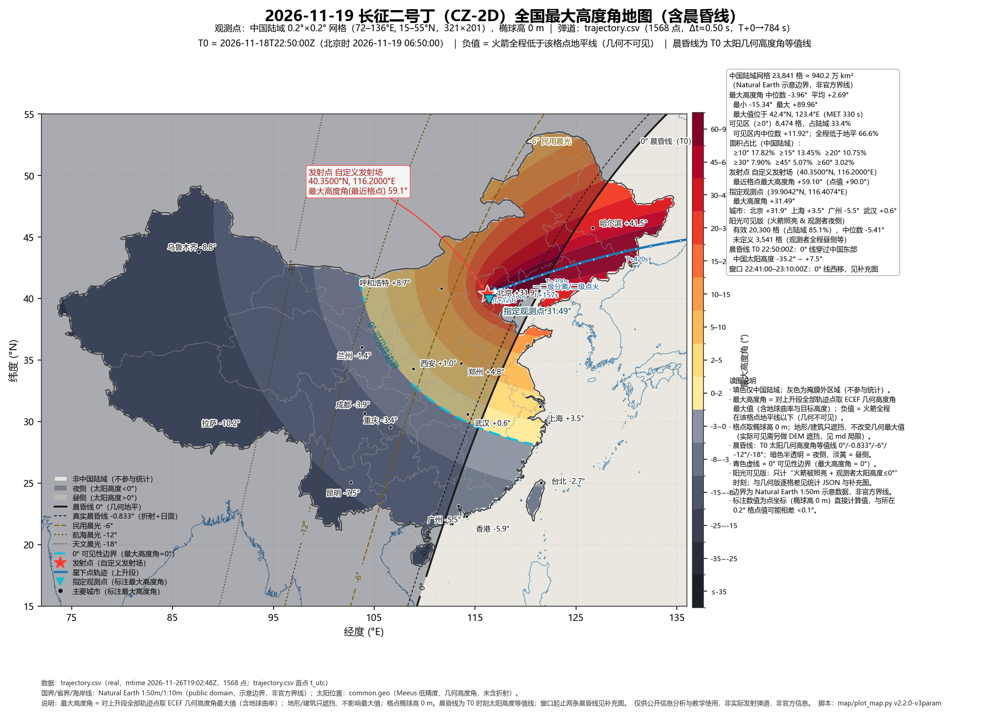
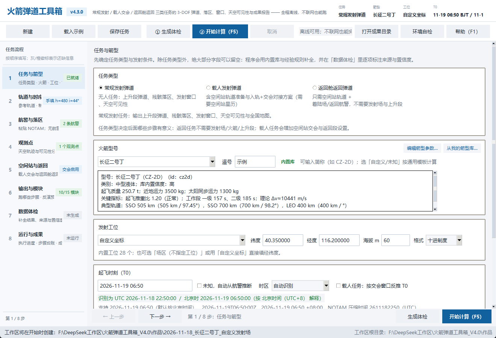
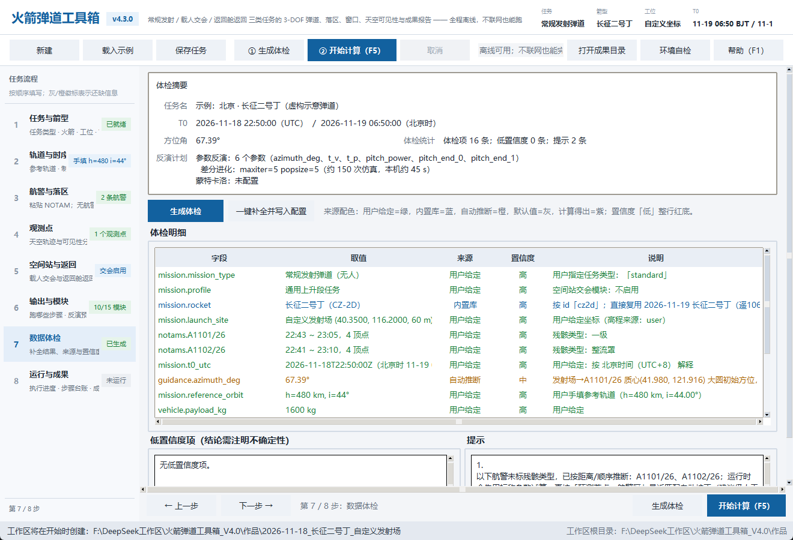
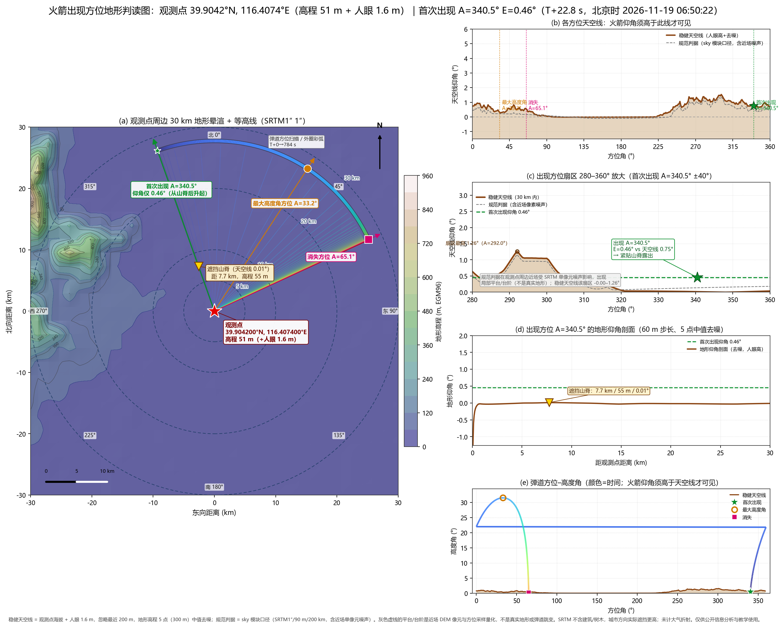
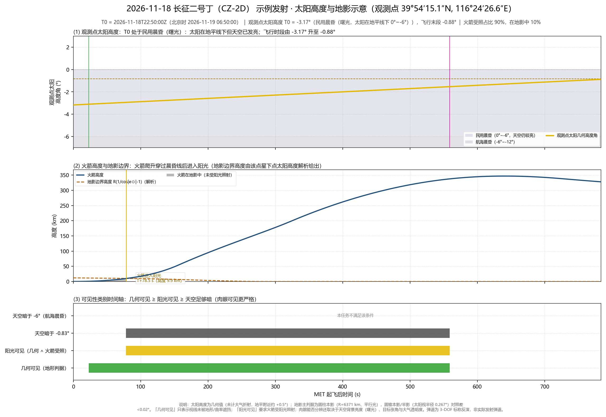

离线 3-DOF 弹道预报与任务成果工具箱：把「一次发射（或一次返回）」变成一整套可交付成果—— 弹道、残骸落区、入轨根数、发射窗口、观测点天空轨迹、全国最大高度角地图、三维 KMZ、 不确定度、中文技术报告与交付自检。
源码与完整文档（独立仓库）：https://github.com/Logicx200/rocket-ballistic-toolkit

本作品展示图统一使用「北京」作为示例地点：发射场在北京北部（自定义坐标 40.35°N, 116.20°E）， 观测点在北京天安门（39.9042°N, 116.4074°E）。这是一次虚构的示意任务，不是真实发射。
能做什么
- 三类任务：常规发射弹道 / 载人交会（含 T0 反推、相位调整 + Hohmann + 末段逼近）/ 返回舱返回（制动窗、再入/开伞/着陆、1σ 散布）；
- 八步向导 GUI：任务与箭型 → 轨道与时序 → 航警与落区 → 观测点 → 空间站与返回 → 输出与模块 → 数据体检 → 运行与成果；
- 自定义箭型：多级 / 并联助推器 / 多机多阶段点火 / 折线俯仰 / 整流罩，图形化编辑器，免写数据库；
- 真实出图：全国最大高度角地图（含晨昏线/阳光可见）、天空轨迹与地形判读、三维 KMZ/KML；
- 交付自检：
qc_report.json逐项 PASS/FAIL、一页纸任务摘要、成果清单与步骤台账。
北京示例（虚构，可复现）
python -m app.main --cli --mission "examples/北京示例_任务输入.json" --workdir "作品\示例_北京_2026-11-19"本机实测：QC 35/35 PASS，入轨 282 km × 937 km / 45.64°，残骸 3/3 落区内，发射窗口 19.4 min， 北京观测点最大仰角 31.5°。
| 界面 | 数据体检 |
|---|---|
 |  |


输出成果
作品\<日期_型号_工位>\
├─ sim\ 弹道序列、事件表、落点、入轨根数、关键节点、飞行阶段、环境剖面
├─ sky\ 天空轨迹、地形判读、太阳/地影
├─ map\ 全国最大高度角地图、晨昏线、落区图
├─ viz\ 三维 KMZ/KML
└─ report\ 任务摘要、成果清单、技术报告（md/docx）、qc_report.json技术栈
Python 3.10+ · numpy · scipy · matplotlib · tkinter · python-docx · sgp4 · PyInstaller
说明
- 仅供公开信息分析与教学使用；非实际发射/返回弹道，非官方信息。
- 3-DOF 质点模型，不含侧向机动细节、风场与真实发动机调节；交会与返回舱结果为工程估算。
- 支持打包为免安装 Windows exe（PyInstaller one-folder），打包脚本随源码仓库提供。